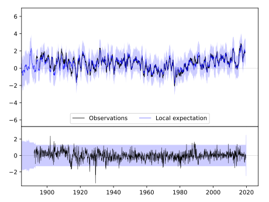
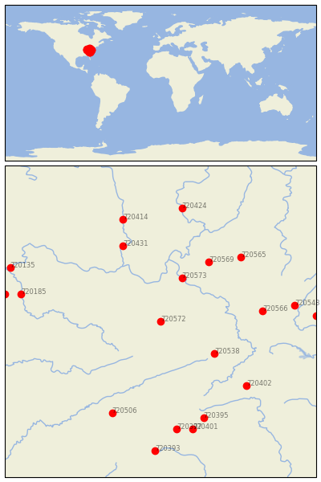
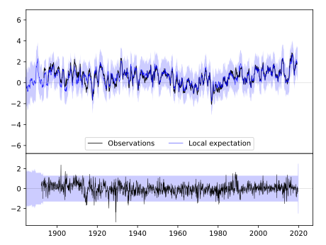
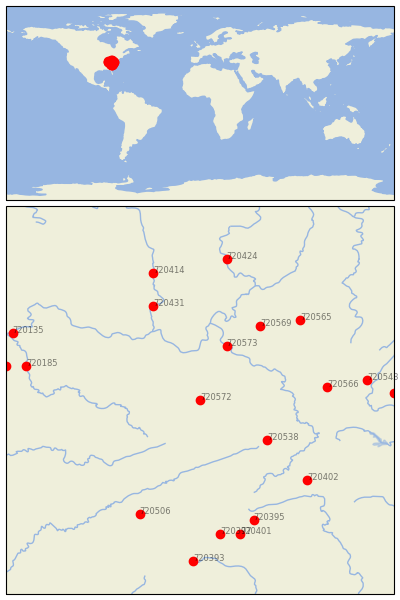

WILLIAMSON [USA]
 


| Neighbour | Name | Country | Distance | Lon/Lat | Years |
|---|
| 720572 | WILLIAMSON | USA | 0 | -82.3, 37.7 | 1892-2019 |
| 720573 | WINFIELD LOCKS | USA | 95 | -81.9, 38.5 | 1893-2019 |
| 720538 | BURKES GARDEN | USA | 110 | -81.3, 37.1 | 1892-2019 |
| 720569 | SPENCER | USA | 145 | -81.4, 38.8 | 1892-2019 |
| 720431 | WAVERLY | USA | 167 | -83.0, 39.1 | 1883-2019 |
| 720566 | LEWISBURG 3 N | USA | 168 | -80.4, 37.9 | 1893-2019 |
| 720565 | GLENVILLE | USA | 186 | -80.8, 38.9 | 1893-2019 |
| 720402 | MT AIRY 2 W | USA | 194 | -80.7, 36.5 | 1889-2019 |
| 720506 | NEWPORT 1 NW | USA | 205 | -83.2, 36.0 | 1879-2019 |
| 720395 | LENOIR | USA | 212 | -81.5, 35.9 | 1871-2019 |
| 720414 | CIRCLEVILLE | USA | 219 | -83.0, 39.6 | 1893-2019 |
| 720543 | HOT SPRINGS | USA | 222 | -79.8, 38.0 | 1892-2019 |
| 720397 | MARION 2 NW | USA | 224 | -82.0, 35.7 | 1879-2019 |
| 720401 | MORGANTON | USA | 228 | -81.7, 35.7 | 1879-2019 |
| 720185 | FRANKFORT DOWNTOWN | USA | 234 | -84.9, 38.2 | 1893-2019 |
| 720424 | PHILO 3 SW | USA | 236 | -81.9, 39.8 | 1893-2019 |
| 720544 | LEXINGTON | USA | 255 | -79.4, 37.8 | 1861-2019 |
| 720191 | SHELBYVILLE 1 E | USA | 260 | -85.2, 38.2 | 1888-2019 |
| 720393 | HENDERSONVILLE 1 NE | USA | 267 | -82.4, 35.3 | 1879-2019 |
| 720135 | VEVAY | USA | 268 | -85.1, 38.7 | 1864-2019 |